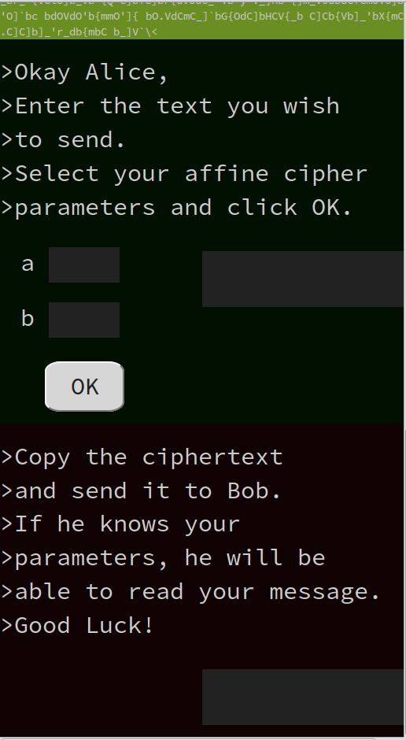
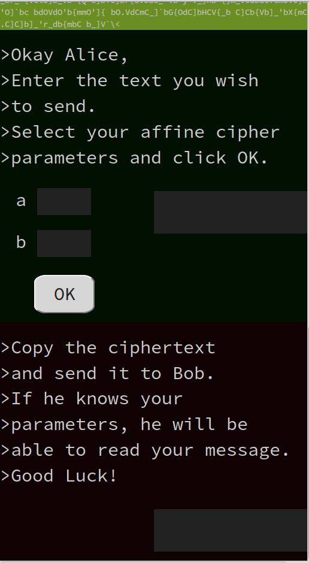

Summer 2015
Apprentice/Intern with ShareProgress
I participated in defining and developing social media elements of the Open Supporter Data Interface API (opensupporter.org). I also assisted Amar Shah in maintaining, testing, developing and deploying a large scale Rails app.
Code Louisville
I completed the front end development course, solidifying my skills in HTML, CSS, Sass, JavaScript/JQuery, Bootstrap and Ember.js. This course culminated in a demonstration project in which I redesigned the Louisville Free Public Library website, implementing it as an Ember app.
August 2012 - Present
Math Teacher, North Bullitt High School
In addition to completing the Kentucky Teacher Intership Program, I collaborated with a diverse team of educators in the ongoing development of the Transitional Math and Integrated Math courses.
Computer Science Teacher, Fern Creek High School
I played a crucial role in designing two new courses for the Computer Science program at Fern Creek, the only four year public school CS curriculum in the Louisville area. My team implemented a Computer Literacy course modeled after UCLA's Exploring Computer Science and an AP Computer Science Principles course modeled after UC Berkeley's Beauty and Joy of Computing. I taught students to program in Java, and prepared them for the AP Computer Science exam.
August 2010-September 2012
Research Assistant, Logistics and Distribution Institute
I presented research into computational and extremal problems of restricted matchings on graphs to industry and University partners. This included applications to rapid trading software, cloud administration, and scheduling.
|
 
